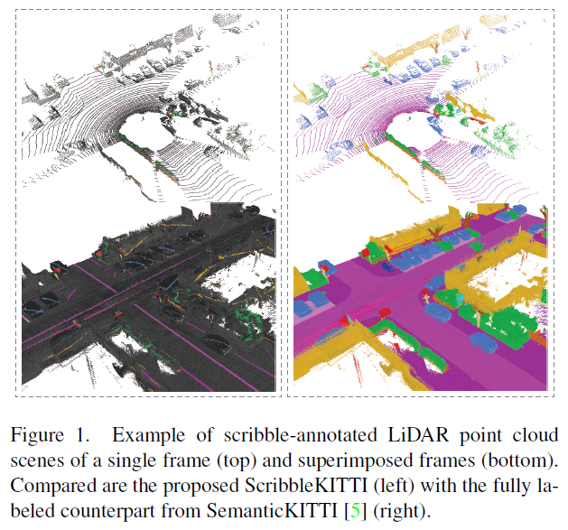
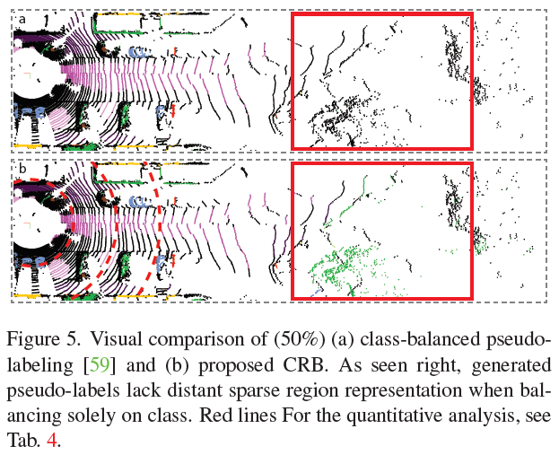
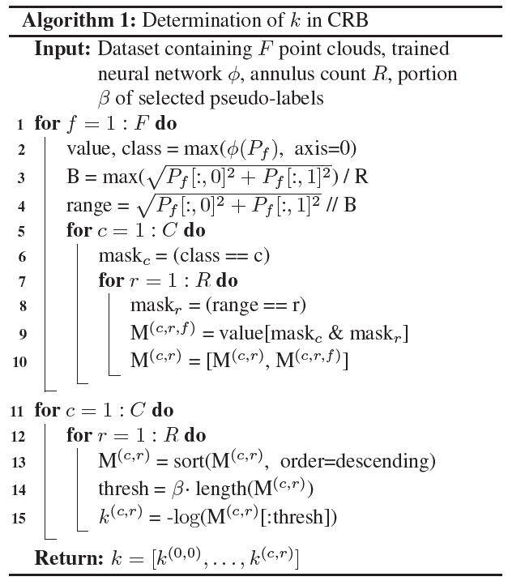
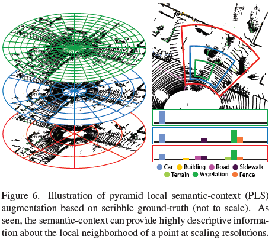
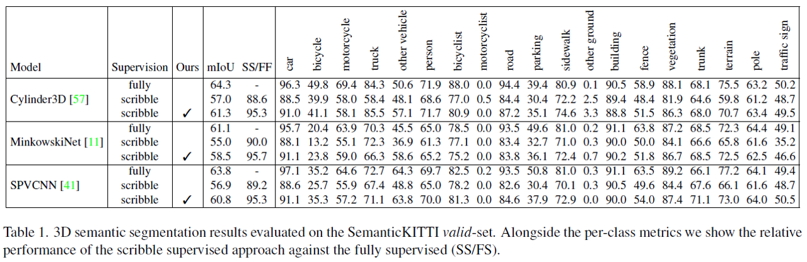
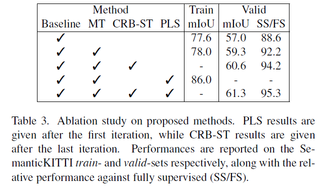
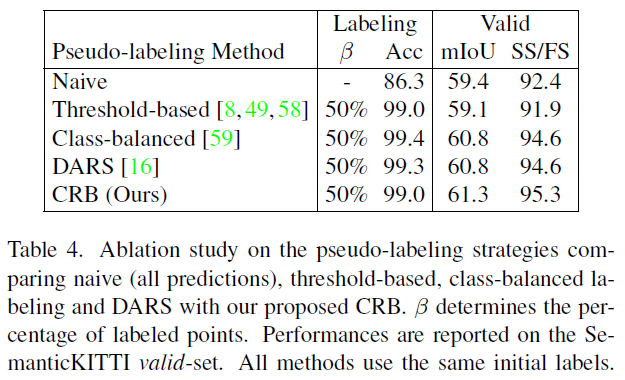

- Unal, O., Dai, D., & Van Gool, L. (2022). Scribble-supervised lidar semantic segmentation. In Proceedings of the IEEE/CVF Conference on Computer Vision and Pattern Recognition (pp. 2697-2707).
- official implementation
개인적인 논문해석을 포함하고 있으며, 의역 및 오역이 남발할 수 있습니다. :)
1. Introduction
자율주행 및 LiDAR 데이터에 대한 연구가 활발해지고 있으나 3D point cloud에 semantic segmentation label을 할당하는 작업은 매우 비용이 많이 소모됩니다. 저자들은 weak annotation 방법 중 하나인, scribbles가 2D semantic segmentation 작업에도 효과적임을 입증했으며 이를 LiDAR 3D point cloud semantic segmentation에 사용할 것을 제안합니다.
이들은 3D semantic segmentation의 benchmark 데이터셋으로 많이 사용되는 SemanticKITTI 데이터셋 전체 labeled point 수의 8.06%에만 label을 할당해 ScribbleKITTI라는 이름의 benchmark 데이터셋을 공개합니다.

또한 이 scribbles의 효과적인 학습을 위해 1) unlabeled points에 대하여 teacher 모델과 student 모델 간의 consistency loss를 도입하고 2) outdoor LiDAR 데이터에 적합한 self-training scheme을 도입하며 3) pyramid local semantic-context descriptor를 통한 augmentation으로 pseudo-label의 퀄리티를 향상시키는 방법을 사용합니다.
결과적으로는 기존 모든 point들에 label이 할당되어 있는 경우보다 8%만의 label을 활용해 상대적으로 95.7%에 해당하는 성능을 달성했습니다.
4. Scribble-Supervised LiDAR Segmentation
Problem definition
논문에선 전체 LiDAR point cloud 집합을 $P = \set{p \mid p=(x, y, z, I) \in \mathbb{R}^4}$로 정의합니다. 여기서 $x, y, z$는 각 point의 위치좌표이고 $I$는 intensity를 나타냅니다.
이 집합 중 소수의 labeled points, $S \subseteq P$에 대한 loss는 기존 fully supervised task에서 주로 사용하는 $H$ (typically cross-entropy)를 사용합니다. 이를 수식으로 표현하면 아래와 같죠.
\[\min_\theta \sum^F_{f=1}\sum^{\lvert P_f \rvert}_{i=1} \mathbb{1}(p) H(\hat y_{f,i\mid\theta}, y_{f,i})\]$\hat y_{f,i\mid\theta}$는 총 point cloud 프레임 $F$ 중 $f$번째 프레임 내 $i$번째 point $p_{f, i} \in P_f$에 대한 모델의 예측 값입니다. 이 모델은 $\theta$를 파라미터로 같습니다. 반대로, $y_{f,i}$는 ground truth label이겠죠.
위에서 제시한 baseline loss는 전체 데이터 point의 약 8%에 해당하는 point에 대한 학습이기 때문에 성능저하는 필연적이고 빈번하게 출현하지 않는 class에 대한 신뢰도는 제한된 supervision 정보로 인해 당연하게 떨어질 것입니다.
이후부턴 본 논문에서 제시하는 위와 같은 문제를 어떠한 방식으로 해결하는지를 제시하고 있습니다.
4-1 Partial Consistency Loss with Mean Teacher
Mean Teacher
논문에서는 unlabeled points에서 활용할 수 있는 weak supervision을 효과적으로 적용하기 위해 Mean teacher framework을 도입합니다.
mean teacher framework란? 각각 student (parametrized by $\theta$), teacher (parametrized by $\theta^{\text{EMA}}$)로 정의된 두 모델로써 구성됩니다. 이 때 teacher 모델의 파라미터는 student 모델의 것에 영향 받습니다. 학습 초기에는 거의 teacher 모델 본인의 파라미터로 모델 파라미터가 형성되지만, 점차 student 모델의 파라미터로 대체되죠. 이를 Exponential Moving Average (EMA)라고 말합니다. 말로 이해하려 했을 때 살짝 어렵지만, 수식으로 쉽게 이해할 수 있습니다. 학습이 진행되는 step을 $t$, teacher모델 파라미터가 student 모델의 것으로 대체되는 속도를 나타내는 smoothing coefficient를 $\alpha$라고 했을 때, 아래와 같이 나타냅니다.
\[\theta^{\text{EMA}}_t = \alpha \theta^{\text{EMA}}_{t-1} + (1-\alpha) \theta_t\]저자들은 이를 통해 teacher model의 예측이 student 모델을 위한 weak supervision의 형태로 작용할 수 있다고 말하고 있습니다.
Partial Consistency loss
여기에 더불어 unlabeled points 집합 $U$에 대한 teacher model의 예측값, student model의 예측값 사이의 consistency loss를 도입합니다. 다른 consistency loss를 도입한 연구들과 다르게 unlabeled points에 대해서만 적용한다는 점을 강조하고 있습니다.
이를 통해 labeled points $S$엔 teacher model의 불확실성이 배제된 깔끔한 supervision을 얻어낼 수 있겠고, 반면 unlabeled points엔 더 정확한 예측을 수행할 수 있는 teacher model의 예측 값을 student model이 근사하는 방향으로 학습하게 될 것 입니다.
\[\min_\theta \sum^F_{f=1}\sum^{\lvert P_f \rvert}_{i=1} G_{i,f} = \begin{cases} H(\hat{y}_{f,i\mid\theta}, y_{f,i}) & \text{if } p_{f,i} \in S \\ \log(\hat{y}_{f,i\mid\theta}) \hat{y}_{f,i\mid\theta^{EMA}} & \text{if } p_{f,i} \in U \end{cases}\]하지만 여전히 unlabeled points에 대한 supervision은 전적으로 teacher model의 성능에 제한될 수 있다는 점, 학습 도중 model의 softmax prediction만으로 labeling을 수행하는 soft pseudo-labeling만으로는 최대 확률 클래스 이외의 다른 클래스들에도 약간의 supervision이 섞이는 문제점을 지적할 수 있습니다.
4-2 Class-range-balanced Self-training (CRB-ST)
4-1에서 언급한 것처럼 softmax prediction을 통해 pseudo-labeling을 수행했을 때 발생할 수 있는 불확실성을 배제하고 unlabeled points에 대한 확실한 예측 정보를 직접적으로 활용해야 합니다.
이를 위해 저자들은 pseudo-labeling을 통해 labeled data의 수를 늘립니다. 우선 모델의 예측 값을 통해 pseudo-labeled points 집합 $L$을 정의하고, 이 집합과 기존 scribble labeled points 집합 $S$와 함께 모델을 다시 학습하는데요.
기존 scribble-supervised semantic segmentation 연구들에서 이런식의 pseudo-labels 기반의 self-training이 효과적임을 입증했었습니다. 하지만 자율주행 차량의 연구를 위해 수집된 해당 segmentation class들은 필연적으로 특정 클래스에 적은 수의 샘플들이 수집될 수 밖에 없습니다 (long tailed 특징).
해당 문제를 해결하기 위해 이전 연구에선 전체 class distribution에 따라 pseudo-labeling에 대한 threshold를 class 별로 다르게 설정하는 방식으로 접근했습니다. 이 방법이 2D segmentation에 효과적인 결과를 가져다 주었지만, 3D LiDAR 데이터에는 또다른 문제가 존재함을 논문에서 지적하고 있습니다.
그 문제는 바로 LiDAR 센서의 특성으로 인해 특정 공간에 따라 포인트의 밀도가 다르게 분포한다는 점입니다. 이러한 특성을 가진 LiDAR 센서 데이터에 대해 전역적인 class balance를 고려하게 된다면, 센서와 가까운 영역, 즉 LiDAR 센서와 가까운 영역에 편향될 수 있습니다.
예를 들어, 일반적으로 차량 포인트들은 LiDAR 센서와 가까운 것에 반해, 수풀 포인트들은 LiDAR 센서와 거리가 멀리 떨어져 있다고 가정해봅시다. 이때 포인트의 class balance는 차량 클래스에 높은 분포를 가지고 반대로 수풀 클래스는 낮은 분포를 가질 것입니다. 왜냐하면 LiDAR 센서와의 거리가 멀면 멀수록 포집되는 포인트의 수가 적을 테니 말이죠. 이로 인해 모든 unlabeled point가 할당될 확률은 차량에 높게 할당될 것입니다. 분명, 센서와 거리가 멀리 떨어진 unlabeled point들은 마땅히 수풀 클래스에 할당될 확률이 높아야 하지만요.
이러한 점을 해결하기 위해 논문에서는 class balance를 전역적으로 살펴보는 대신, 구역을 나누어 class balance를 살펴봐야 한다고 말합니다. 즉, LiDAR 센서와의 거리가 먼 포인트들끼리 클래스 분포를 살펴봐야 하는 것이죠.
이를 기존 class balance pseudo-labeling 방법에서 확장해 class-range-balanced (CRB) pseudo-labeling이라고 명명하고 있습니다.
 아래 이미지처럼 센서와 거리가 멀리 떨어진 포인트들 간의 클래스 분포를 통해 pseudo-label을 할당하기 때문에, 수풀(green-colored) 포인트가 할당될 수 있습니다.
위에서 서술한 내용을 알고리즘으로써 정리하면 다음과 같습니다.
 위 알고리즘의 결과물로 각 cylindrical 구역 $r$에 대하여 각 클래스 $c$에 클래스가 할당될 임계값 $k^{(c,r)}$ 집합이 도출됩니다. 이후의 pseudo-labeling 과정에서 이 임계값을 사용할 것입니다.
여기서 또 주의해야할 점 한 가지는 알고리즘 14번째 line에 위치한 $\beta$입니다. 논문에서는 $\beta$를 두어 CRB 방법으로 pseudo-label을 할당할지, 그대로 unlabeled label로 남겨둘지 확률을 부여했습니다. 만약 $\beta=0.5$라면, 전체 unlabeled point 중 절반은 CRB 방법으로 pseudo-label이 부여되고 나머지 절반은 그대로 unlabeled point로 남겨질 겁니다.
이와 같은 방법을 채용한 구체적인 의도는 논문에서 언급하지 않고 있는 것 같아 넘어가도록 하겠습니다.
CRB를 적용한 최종 목적함수는 아래와 같습니다.
\[\min_{\theta, \hat{y}} \sum_{f=1}^F \sum_{i=1}^{\lvert P_f \rvert} \left[ G_{i,f} - \sum_{c=1}^C \sum_{r=1}^R F_{i,f,c,r} \right]\] \[G_{i,f} = \begin{cases} H(\hat{y}_{f,i\mid\theta}, y_{f,i}) & \text{if } p_{f,i} \in S \cup L \\ \log(\hat{y}_{f,i\mid\theta}) \hat{y}_{f,i\mid\theta^{EMA}} & \text{if } p_{f,i} \in U \backslash L \end{cases}\] \[F_{i,f,c,r} = \begin{cases} (\log(\hat{y}^{(c)}_{f,i\mid \theta^{\text{EMA}}}) + k^{(c,r)}) \hat{y}^{(c)}_{f,i}, & \text{if } r=\lfloor \lVert (p_{x,y})_{f,i} \rVert / B \rfloor \\ 0, & \text{otherwise} \end{cases}\]여기서, negative log-threshold를 nonlinear integer optimization으로 다루기 위해, pseudo-label을 아래와 같이 정의합니다.
\[\hat{y}^{(c)*}_{f,i} = \begin{cases} 1, & \text{if } c = \text{argmax }\hat{y}_{f,i \mid \theta^{\text{EMA}}}, \hat{y}_{f,i \mid \theta} \gt \exp(-k^{(c,r)}) \\ & \text{with } r=\lfloor \lVert (p_{x,y})_{f,i} \rVert / B \rfloor \\ 0, & \text{otherwise} \end{cases}\]레이블이 할당되는 각 조건에 대해 살펴볼까요??
첫 번째 $\text{argmax }\hat{y}_{f,i\mid \theta^{\text{EMA}}}$는 teacher model의 예측 클래스가 $c$일 때를 의미합니다.
두 번째로 $\hat{y}_{f,i \mid \theta} \gt \exp\left(-k^{(c,r)}\right)$는 student model의 예측 probability가 CRB 과정에서 도출해낸 임계값보다 큰 경우를 의미합니다. 보통 데이터의 분포를 살펴보니 구역 $r$에선 클래스 $c$가 할당되려면 이 정도 probability는 갖춰야 한다는 걸 나타내는 거죠.
4-3 Pyramid Local Semantic-context (PLS)
self-training은 pseudo-label의 퀄리티에 성능이 크게 좌우됩니다. 더 좋은 퀄리티의 pseudo-label을 확보하기 위해서 scribble points에서 최대한의 feature를 포착하기 위한 방법이 필요합니다.
논문에서는 아래 두 가지 3D 공간에서의 semantic classes들의 분포에 대한 고찰을 이야기합니다.
- spatial smoothness constraint - 비슷한 공간 내의 포인트들은 같은 클래스를 가지고 있을 확률이 높습니다.
- semantic pattern constraint - semantic class들은 서로서로 물리적 연관성을 가지고 있습니다. 예를 들어 차량은 노면이나 주차공간 등의 지면 위에 위치하는 경우가 대부분이고, 보행자 클래스 역시 도보나 건물 등의 주변에 위치해 있는 경우가 많습니다.
위 특성을 반영하기 위해 저자들은 multiple size of bins in cylindrical 좌표를 채택합니다. 해당 좌표 feature의 특징은 cylinder3D에서 제안되었던 cylindrical 좌표 도입과 함께 1) 다양한 스케일의 좌표계 사용이 있습니다. 또한 해당 좌표계에서 histogram을 계산해 2) 가장 비율이 높은 class 정보를 학습 feature로 사용한다는 점이 있습니다.
 좌측 그림에서와 같이 녹색 cylindrical bins에선 비교적 지역적인 feature를, 적색 cylindrical bins에선 비교적 전역적인 feature를 포착할 수 있을 것입니다.
논문에서 제안하는 Pyramid Local Semantic-context, PLS는 아래의 수식과 같이 정의합니다.
\[\text{PLS} = \left[ \mathbf{h}^1_i/\max(\mathbf{h}^1_i) , ... , \mathbf{h}^s_i / \max(\mathbf{h}^s_i) \right] \in \mathbb{R}^{sC}\]여기서 각 $\mathbf{h}^s_i$는 각 cylindrical bin $b_i$에 대한 scribble label의 클래스 별 히스토그램을 나타냅니다.
\[\begin{aligned} \mathbf{h}_i &= \left[ h^{(1)}_i, ..., h^{(C)}_i \right] \in \mathbb{R}^C \\ h^{(c)}_i &= \text{#} \set{y_j = c \forall j \mid p_j \in b_i} \end{aligned}\]위 PLS의 의미를 곱씹어보면 각 cylindrical 영역에 포인트가 위치하는 분포라고 해석할 수 있겠습니다.
위와 같이 구축해낸 PLS feature를 기존 global geometry 정보($x, y, z$, intensity)와 함께 구성되어 $P_{avg} = \set{ p \mid p=(x,y,z,I,PLS) \in \mathbb{R}^{4+sC}}$를 형성하고, 바로 이 것이 모델 입력으로 사용됩니다.
하지만, 학습이 완료된 후 pseudo-label을 inference에 사용할 수 없습니다. 그 이유는 scribble label 정보를 통해 위 PLS 정보를 확보할 수 없기 때문이죠.
따라서 논문에서도 학습 과정의 마지막인 distillation 과정에선 이 PLS feature를 학습에서 제외하고 있습니다.
5. Experiments
- 약어 정리
- SS - scribble-supervised
- FS - fully supervised
- SS/FS - fully supervised 성능 대비 scribble-supervised 성능 비율
5-1 Results
 세 가지 baseline 모델 (Cylinder3D, MinkowskiNet, SPVCNN) 모두 제안하는 방법을 사용했을 때 성능이 향상될 수 있음을 확인할 수 있습니다.
5-2 Ablation Studies
Effects of Network Components
여기에선 논문에서 제안하는 framework의 각 요소가 성능에 미치는 영향을 실험합니다. train set에서의 성능과 validation set에서의 성능을 함께 보여주는데, 논문에선 train set의 성능을 통해 pseudo-label의 퀄리티를 짐작할 수 있을 것이라고 말하고 있습니다.

- 2번째 train mIoU와 4번째 train mIoU를 비교했을 때,
- PLS 방법 사용 여부에 따라 8% 가량 크게 향상됨을 확인할 수 있습니다.
- 이를 통해 논문에서 제안하는 PLS가 pseudo-label을 잘 포착해낼 수 있음을 짐작할 수 있습니다.
- 2번째 valid 성능과 3번째 valid 성능을 비교했을 때,
- CRB의 도입에 따라 약 2% 가량 향상됨을 확인할 수 있습니다.
Pseudo-label Filtering for Self-training
CRB pseudo-labeling 모듈의 기여를 파악하기 위해 여러 pseudo-labeling 방법을 비교합니다.
- naive sampling
- threshold-based sampling
- class-balanced (CB) sampling
- DARS
- class-range-balanced (CRB) sampling

labeling 정확도를 통해 outdoor LiDAR 데이터의 long-tailed 특성을 극복하기 위한 CB와 DARS 방식이 pseudo-label의 퀄리티를 크게 커버하는 모습을 확인할 수 있습니다. 더불어 validation set에 대한 성능 향상도 threshold-based 방식에 비해 크게 향상시킴을 볼 수 있습니다.
하지만 저자들은 이와 같은 성능 향상폭이 2D semantic segmentation에서 CB나 DARS 방식이 보여주었던 것에 비해 기대에 못 미친다고 다시 한 번 지적하고 있습니다. 여기에서 저자들은 CRB 방식의 도입에 영감을 얻은 것으로 보이죠.
CRB 방식을 적용했을 때 labeling 정확도는 앞선 두 방식에 비해 개선되지 않았지만, validation set에 대한 성능이 향상됨을 확인할 수 있습니다.
Consistency-loss within Mean Teacher
여기에서는 consistency loss의 적용 범위에 대해 실험합니다. 1) consistency loss를 전체 모든 point에 대해 적용하는 것과 2) unlabeled points에 대해 적용하는 것을 비교합니다.
표의 결과는 두 가지로 나뉠 수 있습니다.
- 최초 scribble-label에 대한 성능
- CRB를 통해 pseudo-label을 할당한 후에 대한 성능
최초 scribble-label에 대한 성능에선 성능 차이가 크지 않습니다. 그 이유에 대해 저자들은 scribble-label이 전체 포인트 중 8%에만 해당하기 때문에 대부분의 unlabeled 포인트들로 구성되어 있음을 이야기합니다. 때문에 1) 전체 포인트에 대한 loss 적용과 2) unlabeled points에 대한 loss 적용의 두 가지 케이스의 loss 구성이 비슷해질 것입니다.
하지만 CRB로 pseudo-labeling을 진행한 후에는 이야기가 달라집니다. mIoU 기준 0.9% 가량 나아지는 모습을 확인할 수 있습니다. 이를 바탕으로 labeled points에도 consistency loss를 적용할 경우 teacher model의 불확실성을 부여해버릴 수 있다고 생각해볼 수 있겠습니다.
본문의 4.1절에서 언급한 것처럼 Partial consistensy loss의 적용이 labeled points에 teacher model의 불확실성을 배제하기 위함임을 이야기하고 있죠.
Comments powered by Disqus.